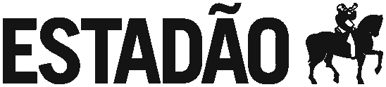
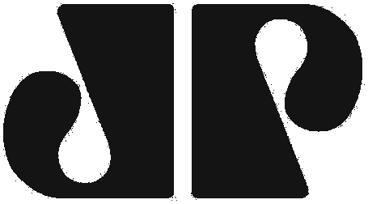
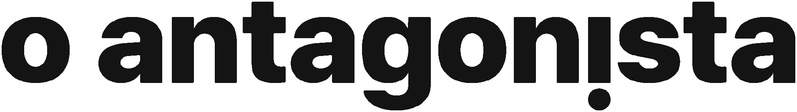
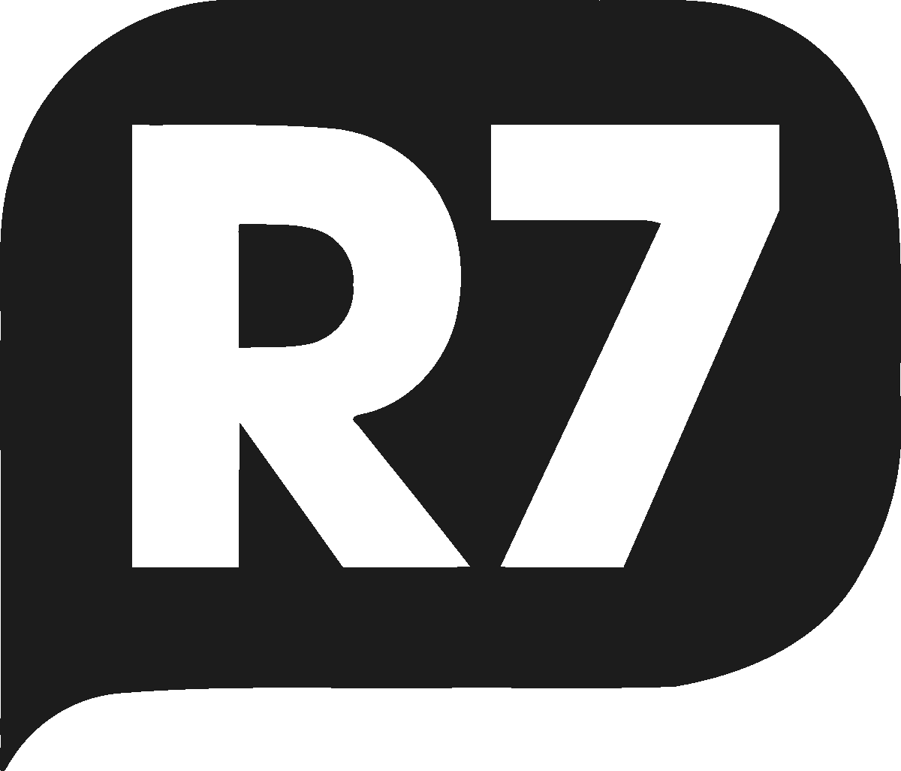
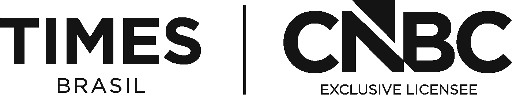
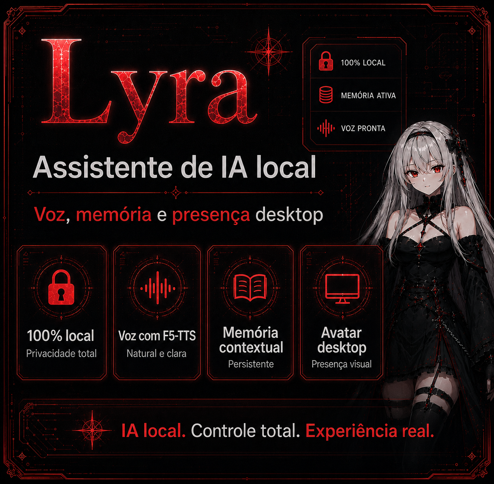
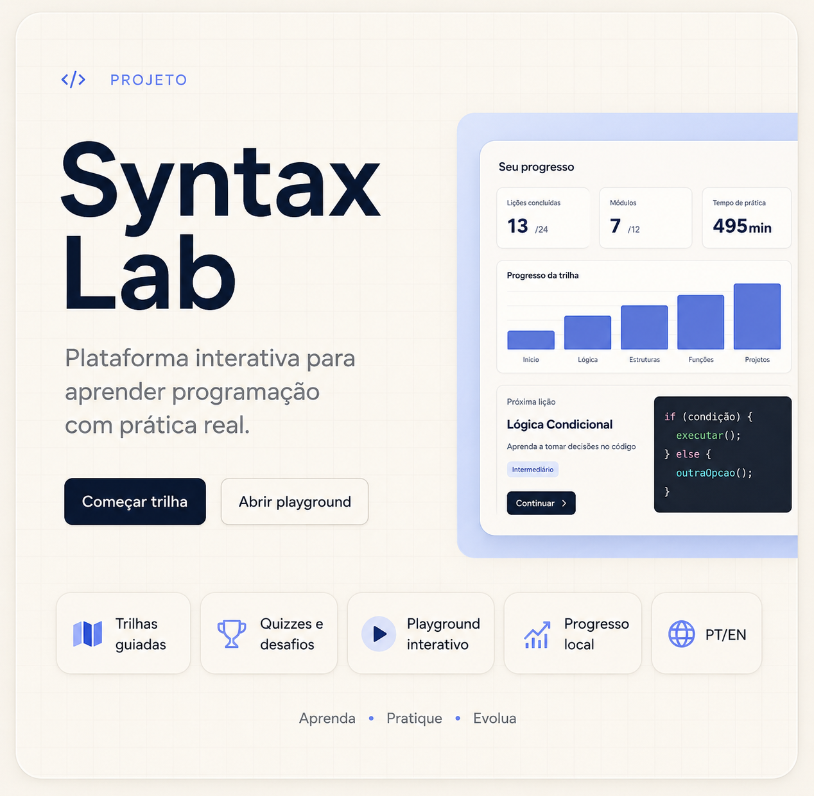
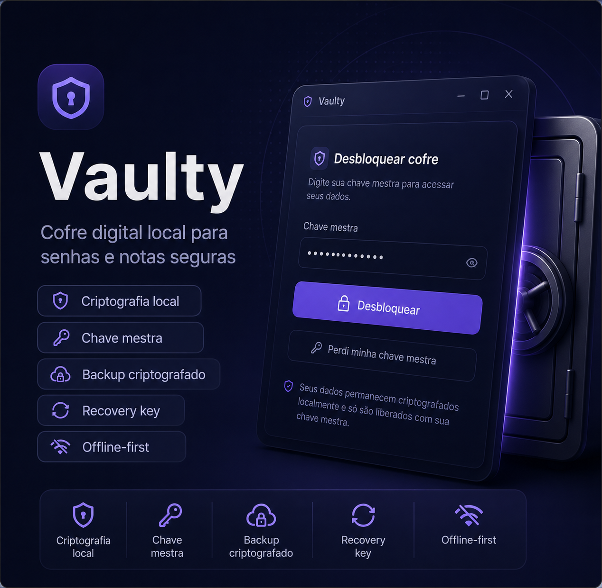
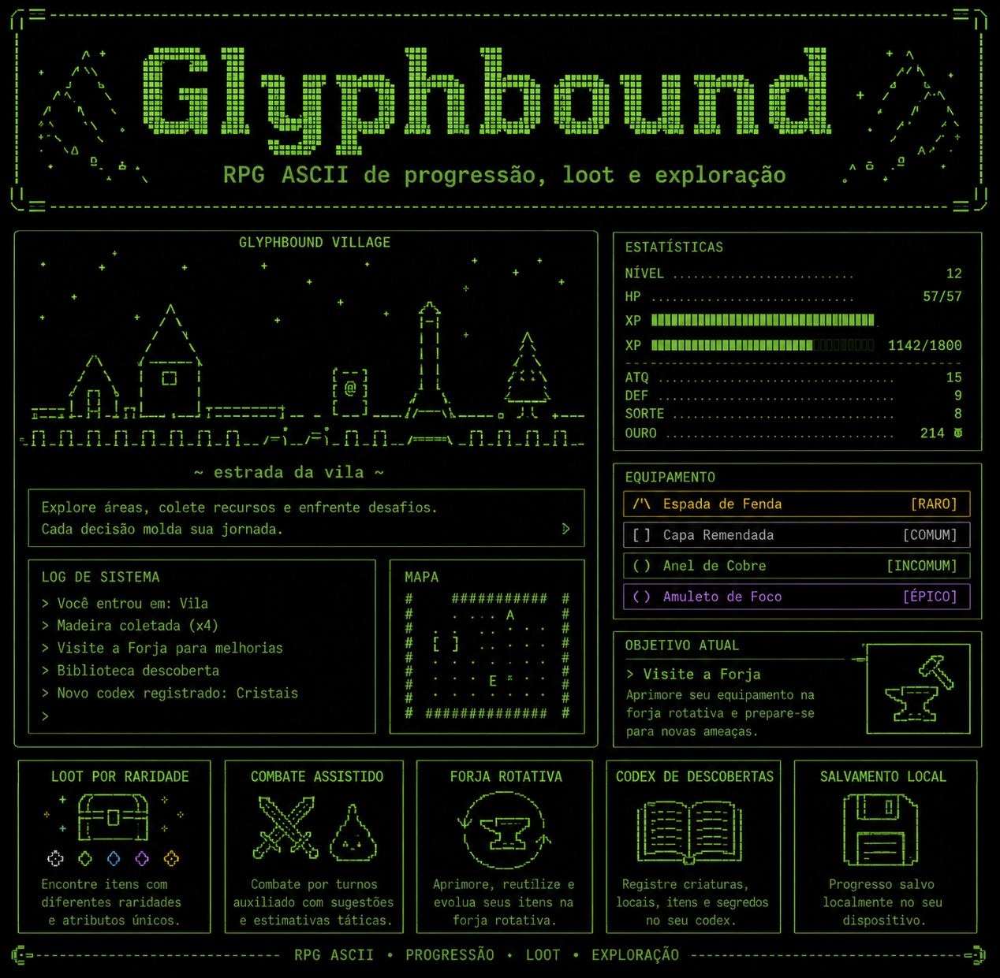
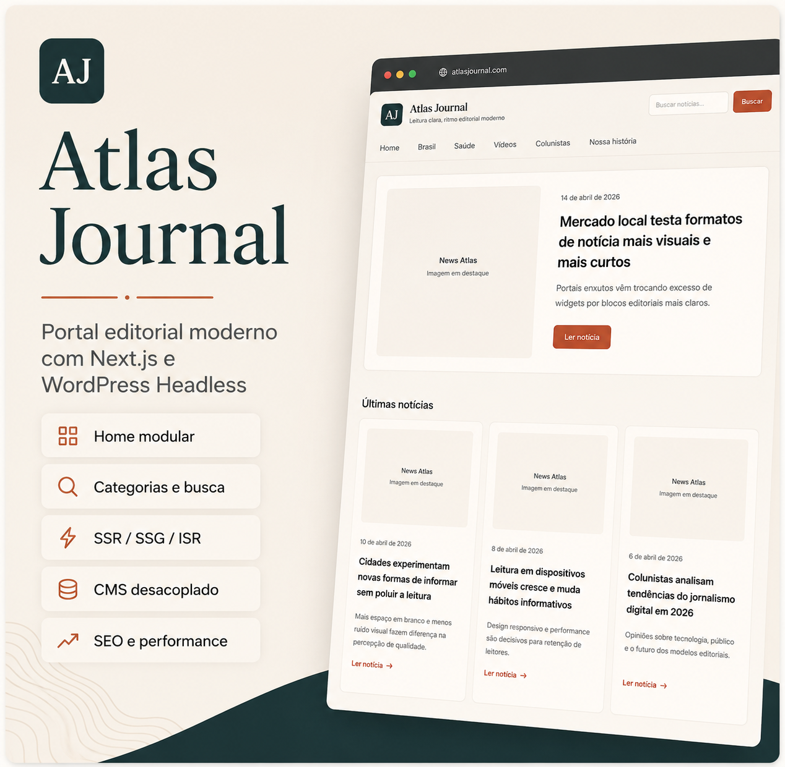

PHP
PHP TypeScript
TypeScript JavaScript
JavaScript Python
Python Ruby
Ruby Laravel
Laravel Ruby on Rails
Ruby on Rails WordPress
WordPress Vue
Vue React
React Svelte
Svelte Next.js
Next.js MySQL
MySQL PostgreSQL
PostgreSQL SQLite
SQLite Redis
Redis Docker
Docker Linux
Linux Git
Git GCP
GCP Cloudflare
CloudflareDesenvolvimento de funcionalidades
Implementação de novas funcionalidades, ajustes em sistemas existentes, integrações com APIs e manutenção de projetos em PHP, WordPress, JavaScript e TypeScript.
FULL STACK · PERFORMANCE · DADOS · CLOUD
Atuo com aplicações web, bancos de dados, performance, cache e cloud, participando tanto do desenvolvimento quanto da manutenção de ambientes em produção.
Atuo entre frontend, backend, banco de dados e infraestrutura, acompanhando a aplicação além da entrega de uma funcionalidade.
No dia a dia, isso envolve desenvolver integrações, investigar gargalos, analisar consultas, trabalhar com cache, lidar com ambientes em nuvem e dar manutenção em sistemas em produção.
Gosto de entender como as partes se conectam para conseguir resolver problemas sem olhar apenas para uma camada isolada.
Atuo como Full Stack Developer no desenvolvimento e manutenção de aplicações, trabalhando a partir das demandas dos clientes e das necessidades de cada projeto. Além das entregas de novas funcionalidades, também investigo e resolvo problemas que aparecem em produção, envolvendo performance, bancos de dados, cache, integrações e infraestrutura.
Desenvolvimento e manutenção de aplicações web, portais e integrações, trabalhando a partir das demandas de cada projeto e dando suporte também ao que acontece em produção.
Implementação de novas funcionalidades, ajustes em sistemas existentes, integrações com APIs e manutenção de projetos em PHP, WordPress, JavaScript e TypeScript.
Investigação de lentidão e gargalos, análise de consultas, índices, WP_Query, Redis/object cache e otimizações relacionadas ao comportamento da aplicação.
Uso de Docker, Linux, GCP, GKE, Cloud SQL, AWS e Cloudflare para acompanhar ambientes, investigar problemas e dar suporte às aplicações em produção.
Troubleshooting, correção de incidentes, deploys, autenticação, MFA, proteção de endpoints e rotinas necessárias para manter os sistemas funcionando.
Atuação em desenvolvimento, manutenção, performance, infraestrutura ou suporte técnico, variando conforme o projeto.





Além de outros projetos em diferentes contextos.
Eles passam por áreas diferentes, como performance web, IA local, segurança, educação, aplicações desktop e arquitetura headless.
Toolkit em PHP + WordPress para acompanhar Core Web Vitals com dados de laboratório e de campo, manter histórico e gerar relatórios semanais automaticamente.

Abrir demo ▶Experimento de assistente local que combina LLM, voz, memória e presença visual no desktop sem depender de serviços de nuvem para o núcleo da interação.

Abrir demo ▶Plataforma de estudo construída para aprender programação escrevendo e testando código, em vez de depender apenas de conteúdo passivo ou múltipla escolha.

Abrir demo ▶Gerenciador de senhas desktop local-first: o cofre fica no dispositivo e o acesso é protegido por chave mestra, criptografia local e controles de sessão.

Abrir gameplay ▶RPG ASCII de progressão e loot em que o combate é assistido e o foco está em farming, equipamentos, raridades, economia e descoberta de conteúdo.

Abrir demo ▶Portal editorial desacoplado: WordPress cuida do conteúdo e do fluxo editorial, enquanto Next.js assume a camada pública, performance, SEO e experiência de navegação.
Sistema full stack de gestão de estoque.
API para coleta, normalização e entrega de dados cívicos.
Automação para listar itens de valor do Warframe Market.
Setup para configurar projetos WordPress e virtual hosts no Linux.
Organizei por contexto para mostrar onde cada tecnologia aparece no meu trabalho e nos meus projetos.
Você pode entrar em contato comigo por e-mail ou pelas minhas redes profissionais.
daniel.siqueira.dev@outlook.com ↗ Ollama
Ollama Electron
Electron Tailwind
Tailwind Vitest
Vitest Vite
Vite Node Crypto
Node Crypto SCSS
SCSS Flask
Flask Shell
Shell GKE
GKE GitHub Actions
GitHub Actions Bitbucket Pipelines
Bitbucket Pipelines